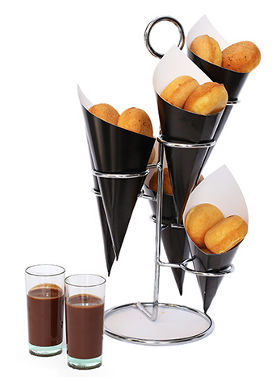

Because the waffle is
the new donut...

HOME MADE AND AUTHENTIC
The original taste is simply the best! Taste the plain waffle like they eat it in Belgium or dipped into real Belgian chocolate, add some home-made whipped cream, fresh fruits or other colorful toppings, while tasting a fair trade Belgian brewed coffee.
Visit our Cafe or Order Today
for delivery or to have us cater your next event